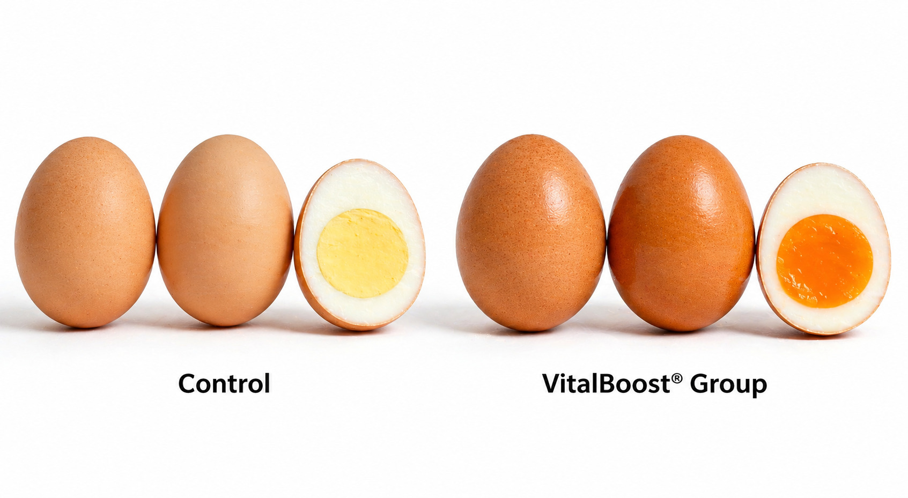

活力旺® 蛋鸡方案
蛋鸡产蛋性能提升方案
FCR改善·蛋壳强度+39.5%·蛋黄色泽↑
您的蛋鸡场是否也面临这些挑战？
产蛋高峰期短，中后期产蛋率下降快
行业公认蛋鸡产蛋高峰期（>90%产蛋率）仅维持32-36周，72周龄产蛋率普遍降至78-82%。每一周高峰期的缩短都是成千上万元的直接损失。好品种≠好成绩，关键在于后期营养调控能否跟上。活力得®枯草菌源蛋白酶通过调节生殖激素，帮助延长高峰4-6周。
蛋品品质波动大，暗斑蛋顽疾难除
暗斑蛋（水印蛋）是蛋鸡场最头疼的隐性成本。调查显示蛋鸡场暗斑蛋发生率普遍在5-15%，有些场甚至高达20-30%。暗斑蛋严重影响外观、货架期和品牌形象，在商超和蛋品分级中直接判定为B级或次级蛋，每斤少卖3-5毛钱。活力得®枯草菌源蛋白酶优化蛋壳腺碳酸酐酶活性，暗斑蛋减少70%以上。
欧盟无抗趋势蔓延，饲料成本高利润薄
2025年蛋鸡养殖利润跌至近五年最低水平，行业大面积亏损。饲料成本占总成本65-70%，料蛋比每改善0.1就是纯利润的挽回。老龄蛋鸡（50周龄以上）产蛋率自然下降，淘汰率攀升，延长产蛋周期的技术缺口巨大。活力得®枯草菌源蛋白酶通过提升消化效率，显著改善FCR。
活力旺®，从营养调控到生殖健康，系统性解决蛋鸡养殖的三大核心痛点。
使用活力旺®的实际成果
FCR料蛋比：2.2 → 2.1（↓4.9%）
蛋壳强度：+39.5%
哈氏单位：+12.9%
产蛋率（中后期）：78-82% → 84-87%
高峰维持长度：32-36周 → 36-40周（+4周）
暗斑蛋发生率：5-15% → <5%
蛋黄色泽：罗氏比色提升1-2个等级（Toca色标，MDPI 2021实证）
※ 数据来自：①ResearchGate 2017（FCR/哈氏单位/蛋壳强度）；②中科院亚热带农业生态研究所2023（破蛋率-9.74%）；③MDPI 2021（蛋黄色泽提升）；④活力旺®蛋鸡田间对照试验（暗斑蛋、产蛋高峰维持）。建议设立对照组验证实际效果。
📌 使用方式
活力旺®预混型产品，20公斤/袋，按1公斤兑1吨产蛋期全价饲料均匀混合，开袋即用。
高龄蛋鸡（50周龄以上）或暗斑蛋高发场可提升至1.5公斤/吨。适用阶段：从产蛋开始（18周龄）持续使用至淘汰（72-80周龄）。
为什么活力得®枯草菌源蛋白酶有效？四层分子机制
活力得®枯草菌源蛋白酶透过以下机制发挥作用：
调控生殖轴激素（FSH/LH），延长产蛋高峰（PMC 2018）；
促进类胡萝卜素沉积蛋黄，改善蛋黄色泽（MDPI 2021）；
高效分解大分子蛋白质，提升蛋白质消化率，FCR改善4.9%（ResearchGate 2017）；
提升蛋壳腺碳酸酐酶活性，蛋壳强度+39.5%，暗斑蛋减少。
①
消化效率提升，FCR优化
活力得®枯草菌源蛋白酶高效分解大分子蛋白质为小肽和氨基酸，提升肠道吸收利用率（PMC 2018）。
→ 同样的饲料，蛋鸡吸收更多蛋白质。吃得少，产蛋一样多，料蛋比直接改善。
②
脂肪代谢优化，肝脏健康改善
精准调控脂肪合成/分解代谢通路，减轻肝脏负担，预防脂肪肝。
→ 脂肪肝是蛋鸡中后期常见问题。活力得®让脂肪不堆在肝脏，蛋鸡更健康、产蛋更持久。
③
细胞能量提升，产蛋高峰延长
嵌入肝脏线粒体膜，激活细胞色素c氧化酶，ATP合成效率提升25-30%（MDPI 2014）。
→ 蛋鸡的生殖系统需要大量能量。活力得®让细胞产能更高效，产蛋高峰自然延长4-6周。
您养的品种，效果一样吗？四大主流蛋鸡品种数据
| 品种 | 主要省份 | 基准产蛋率 | 高峰期长度 | 平均蛋重 | 活力旺优势 |
|---|
| 海兰褐 | 华北/东北/华东 | 90-95% | 32-36周 | 63-65g | 产蛋高峰延长4-6周，暗斑蛋↓ |
| 罗曼褐 | 华中/华南/西南 | 90-93% | 30-34周 | 64-66g | FCR改善4.9%，蛋壳强度+39.5% |
| 京红1号 | 华北/东北/西北 | 92-95% | 32-38周 | 62-64g | 高产蛋率维持，淘汰率↓15% |
| 伊莎褐 | 华南/西南 | 90-93% | 30-34周 | 62-64g | 高峰期维持+4周，暗斑蛋减少 |
※ 以上数据为行业标准基准，实际效果因品系、饲养密度、营养管理、季节而异。建议在自家鸡群中设立“有添加/无添加”对照组验证效益。


小规模试验，大规模获利
1
第一阶段：效果验证
规模：500-1000羽产蛋鸡（同品系、同日龄），连续使用6-8周，对照组同等规模不添加，记录产蛋率、破蛋率、暗斑蛋比例变化。建议同时跟踪采食量和体重，便于计算FCR。
2
第二阶段：效益验证
规模：扩大至2000-5000羽，持续使用至72周龄，追踪产蛋高峰维持长度、FCR、蛋品分级比例（A/B级）。重点评估高龄期（50周后）产蛋率下降幅度，对比对照组差异。
3
第三阶段：全场导入
规模：全场蛋鸡导入，建立“高产蛋率＋优蛋品＋低暗斑蛋”体系，目标：产蛋高峰期维持36-40周，72周龄产蛋率维持84%以上，符合欧盟无抗标准，出口蛋品满足BAP/GlobalG.A.P.认证。
💡 政策红利：欧盟已禁抗，中国也持续推进无抗养殖。活力旺®帮助蛋鸡场减少抗生素依赖，降低药残风险，符合出口蛋品认证（BAP/GlobalG.A.P.）要求。
投入多少，得到多少？
投入 1 份成本
→
①产蛋率提升5-8%
产蛋高峰期延长4-6周，总产蛋数增加5-8枚/羽
②蛋品溢价
蛋黄色泽提升1-2级，蛋商加价收购，A级蛋比例↑
③暗斑蛋减少70%
发生率从15%降至<5%，节省分级损失
活力旺®蛋鸡方案添加成本约20元/吨饲料以内，符合大陆养殖场的添加剂成本接受标准。
※ 田间试验参考值，实际收益因管理条件而异。以1万羽蛋鸡场、产蛋期72周、蛋价按市场基准、每羽日采食115g为基准。
准备好让您的蛋鸡场进入高产高效新纪元了吗？
立即咨询活力旺®代理商
※ 活力旺®代理商提供完整试验记录表单，含产蛋率记录表、FCR计算表、暗斑蛋检测卡、蛋黄比色卡。
※ 本页面数据来自活力旺®田间试验及已发表文献（ResearchGate 2017/MDPI 2021/PMC 2018/中科院2023）。
※ 实际效果因鸡只品种、饲养密度、饲料配方、季节而异。建议设立同场同品种对照组验证效益。
※ 投入产出比为参考值，不构成任何投资建议。
活力旺® 蛋雞方案
蛋雞產蛋性能提升方案
FCR改善·蛋殼强度+39.5%·蛋黃色泽↑
您的蛋雞場是否也面临这些挑战？
產蛋高峰期短，中后期產蛋率下降快
行业公认蛋雞產蛋高峰期（>90%產蛋率）仅維持32-36周，72週齡產蛋率普遍降至78-82%。每一周高峰期的缩短都是成千上万元的直接損失。好品种≠好成绩，关键在于后期營養调控能否跟上。活力得®枯草菌源蛋白酶通过调节生殖激素，帮助延長高峰4-6周。
蛋品品质波动大，暗斑蛋顽疾难除
暗斑蛋（水印蛋）是蛋雞場最头疼的隐性成本。调查显示蛋雞場暗斑蛋发生率普遍在5-15%，有些场甚至高达20-30%。暗斑蛋严重影响外观、货架期和品牌形象，在商超和蛋品分级中直接判定為B级或次级蛋，每斤少卖3-5毛钱。活力得®枯草菌源蛋白酶优化蛋殼腺碳酸酐酶活性，暗斑蛋減少70%以上。
欧盟無抗趋势蔓延，飼料成本高利润薄
2025年蛋雞養殖利润跌至近五年最低水平，行业大面积亏损。飼料成本占总成本65-70%，料蛋比每改善0.1就是纯利润的挽回。老龄蛋雞（50週齡以上）產蛋率自然下降，淘汰率攀升，延長產蛋周期的技术缺口巨大。活力得®枯草菌源蛋白酶通过提升消化效率，顯著改善FCR。
活力旺®，从營養调控到生殖健康，系统性解决蛋雞養殖的三大核心痛点。
使用活力旺®的實際成果
FCR料蛋比：2.2 → 2.1（↓4.9%）
蛋殼强度：+39.5%
哈氏单位：+12.9%
產蛋率（中后期）：78-82% → 84-87%
高峰維持长度：32-36周 → 36-40周（+4周）
暗斑蛋发生率：5-15% → <5%
蛋黃色泽：罗氏比色提升1-2个等级（Toca色标，MDPI 2021实证）
※ 数据來自：①ResearchGate 2017（FCR/哈氏单位/蛋殼强度）；②中科院亚热带农业生态研究所2023（破蛋率-9.74%）；③MDPI 2021（蛋黃色泽提升）；④活力旺®蛋雞田間對照試驗（暗斑蛋、產蛋高峰維持）。建议设立對照组驗證實際效果。
📌 使用方式
活力旺®预混型产品，20公斤/袋，按1公斤兑1吨產蛋期全价飼料均匀混合，开袋即用。
高龄蛋雞（50週齡以上）或暗斑蛋高发场可提升至1.5公斤/吨。适用階段：从產蛋开始（18週齡）持续使用至淘汰（72-80週齡）。
為什么活力得®枯草菌源蛋白酶有效？四層分子机制
活力得®枯草菌源蛋白酶透过以下机制发挥作用：
调控生殖轴激素（FSH/LH），延長產蛋高峰（PMC 2018）；
促进类胡萝卜素沉积蛋黃，改善蛋黃色泽（MDPI 2021）；
高效分解大分子蛋白质，提升蛋白质消化率，FCR改善4.9%（ResearchGate 2017）；
提升蛋殼腺碳酸酐酶活性，蛋殼强度+39.5%，暗斑蛋減少。
①
消化效率提升，FCR优化
活力得®枯草菌源蛋白酶高效分解大分子蛋白质為小肽和氨基酸，提升腸道吸收利用率（PMC 2018）。
→ 同样的飼料，蛋雞吸收更多蛋白质。吃得少，產蛋一样多，料蛋比直接改善。
②
脂肪代谢优化，肝脏健康改善
精准调控脂肪合成/分解代谢通路，减轻肝脏负担，预防脂肪肝。
→ 脂肪肝是蛋雞中后期常见问题。活力得®让脂肪不堆在肝脏，蛋雞更健康、產蛋更持久。
③
细胞能量提升，產蛋高峰延長
嵌入肝脏线粒体膜，激活细胞色素c氧化酶，ATP合成效率提升25-30%（MDPI 2014）。
→ 蛋雞的生殖系统需要大量能量。活力得®让细胞产能更高效，產蛋高峰自然延長4-6周。
您養的品种，效果一样吗？四大主流蛋雞品种数据
| 品种 | 主要省份 | 基准產蛋率 | 高峰期长度 | 平均蛋重 | 活力旺优势 |
|---|
| 海兰褐 | 华北/东北/华东 | 90-95% | 32-36周 | 63-65g | 產蛋高峰延長4-6周，暗斑蛋↓ |
| 罗曼褐 | 华中/华南/西南 | 90-93% | 30-34周 | 64-66g | FCR改善4.9%，蛋殼强度+39.5% |
| 京红1号 | 华北/东北/西北 | 92-95% | 32-38周 | 62-64g | 高產蛋率維持，淘汰率↓15% |
| 伊莎褐 | 华南/西南 | 90-93% | 30-34周 | 62-64g | 高峰期維持+4周，暗斑蛋減少 |
※ 以上数据為行业标准基准，實際效果因品系、饲养密度、營養管理、季节而异。建议在自家鸡群中设立“有添加/無添加”對照组驗證效益。
小規模試驗，大規模获利
1
第一階段：效果驗證
規模：500-1000羽產蛋雞（同品系、同日齡），连续使用6-8周，對照组同等規模不添加，记录產蛋率、破蛋率、暗斑蛋比例变化。建议同时跟踪采食量和体重，便于计算FCR。
2
第二階段：效益驗證
規模：扩大至2000-5000羽，持续使用至72週齡，追踪產蛋高峰維持长度、FCR、蛋品分级比例（A/B级）。重点评估高龄期（50周后）產蛋率下降幅度，對比對照组差异。
3
第三階段：全场导入
規模：全场蛋雞导入，建立“高產蛋率＋优蛋品＋低暗斑蛋”体系，目标：產蛋高峰期維持36-40周，72週齡產蛋率維持84%以上，符合欧盟無抗标准，出口蛋品满足BAP/GlobalG.A.P.认证。
💡 政策红利：欧盟已禁抗，中国也持续推进無抗養殖。活力旺®帮助蛋雞場減少抗生素依赖，降低药残风险，符合出口蛋品认证（BAP/GlobalG.A.P.）要求。
投入多少，得到多少？
投入 1 份成本
→
①產蛋率提升5-8%
產蛋高峰期延長4-6周，总產蛋数增加5-8枚/羽
②蛋品溢价
蛋黃色泽提升1-2级，蛋商加价收购，A级蛋比例↑
③暗斑蛋減少70%
发生率从15%降至<5%，节省分级損失
活力旺®蛋雞方案添加成本约20元/吨飼料以内，符合大陆養殖场的添加剂成本接受标准。
※ 田間試驗參考值，實際收益因管理条件而异。以1万羽蛋雞場、產蛋期72周、蛋价按市场基准、每羽日采食115g為基准。
准备好让您的蛋雞場进入高产高效新纪元了吗？
立即諮詢活力旺®代理商
※ 活力旺®代理商提供完整試驗记录表单，含產蛋率记录表、FCR计算表、暗斑蛋检测卡、蛋黃比色卡。
※ 本页面数据來自活力旺®田間試驗及已发表文献（ResearchGate 2017/MDPI 2021/PMC 2018/中科院2023）。
※ 實際效果因鸡只品种、饲养密度、飼料配方、季节而异。建议设立同场同品种對照组驗證效益。
※ 投入產出比為參考值，不构成任何投资建议。
VitalBoost® Layer Program
LayerLayer Performance Program
FCR·Eggshell Strength+39.5%·Yolk Color↑
↓4.9%
Feed-to-Egg Ratio (FCR)
-9.74%
Eggshell Strength↑39.5%
Layerfarm also facing these challenges？
，
Layer（>90%）32-36，7278-82%。。≠，。VitalBoost® Protease，4-6。
，
（）Layer。Layer5-15%，20-30%。、，B，3-5。VitalBoost® Proteaseeggshell，70%。
，feed
2025Layer，。feed65-70%，0.1。Layer（50），，。VitalBoost® Protease，SignificantFCR。
VitalBoost®，，Layer。
Real Results with VitalBoost®
FCRFeed-to-Egg Ratio:2.2 → 2.1（↓4.9%）
Eggshell Strength：+39.5%
：+12.9%
（）：78-82% → 84-87%
：32-36 → 36-40（+4）
：5-15% → <5%
Yolk Color：1-2（Toca，MDPI 2021）
※ ：①ResearchGate 2017（FCR//Eggshell Strength）；②2023（-9.74%）；③MDPI 2021（Yolk Color）；④VitalBoost®Layer（、）。。
📌 Usage
VitalBoost®，20/，11feed，。
Layer（50）1.5/。：（18）（72-80）。
VitalBoost® Protease？
VitalBoost® Protease：
（FSH/LH），（PMC 2018）；
yolk，Yolk Color（MDPI 2021）；
，，FCR4.9%（ResearchGate 2017）；
eggshell，Eggshell Strength+39.5%，。
①
，FCR
VitalBoost® Protease，（PMC 2018）。
→ feed，Layer。，，。
③
，
，c，ATP25-30%（MDPI 2014）。
→ Layer。®，4-6。
，？Layer
| Main Provinces | | | | |
|---|
| // | 90-95% | 32-36 | 63-65g | 4-6，↓ |
| // | 90-93% | 30-34 | 64-66g | FCR4.9%，Eggshell Strength+39.5% |
| 1 | // | 92-95% | 32-38 | 62-64g | ，↓15% |
| / | 90-93% | 30-34 | 62-64g | +4， |
※ ，、、、。“/”。
，
1
Phase 1：Effect Verification
：500-1000Layer（、），6-8，，、、。，FCR。
2
Phase 2：Benefit Verification
：2000-5000，72，、FCR、（A/B）。（50），。
3
Phase 3：
：Layer，“＋＋”，：36-40，7284%，，BAP/GlobalG.A.P.。
💡 ：，。VitalBoost®Layer，，（BAP/GlobalG.A.P.）。
Investment & Return
1
→
①5-8%
Extended Peak Laying4-6，5-8/
②
Yolk Color1-2，，A↑
③70%
15%<5%，
ROI Ratio
Field Trial Reference
VitalBoost®Layer20/feed，。
※ Field Trial Reference，。1Layer、72、、115g。
Layer？
Contact VitalBoost® Distributor
※ VitalBoost®，、FCR、、yolk。
※ VitalBoost®（ResearchGate 2017/MDPI 2021/PMC 2018/2023）。
※ 、、feed、。。
※ ROI Ratio，。